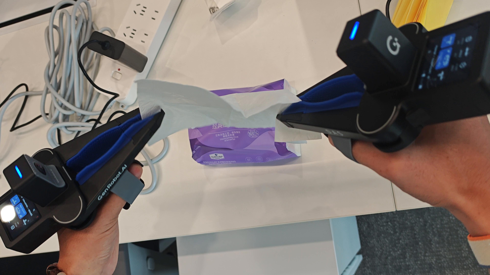
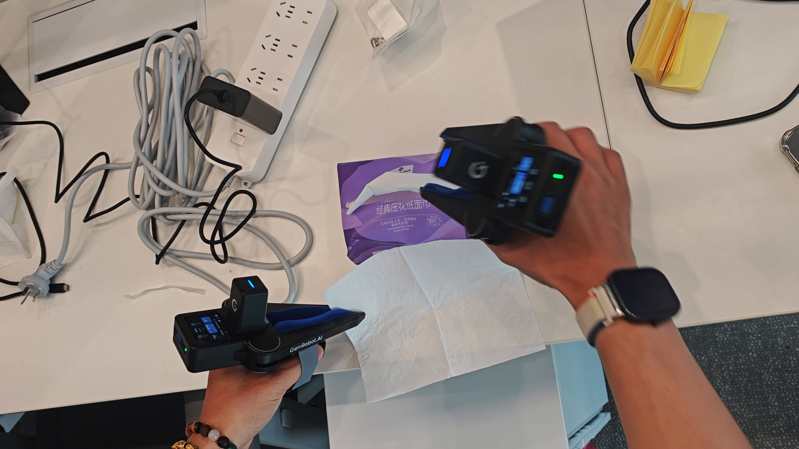
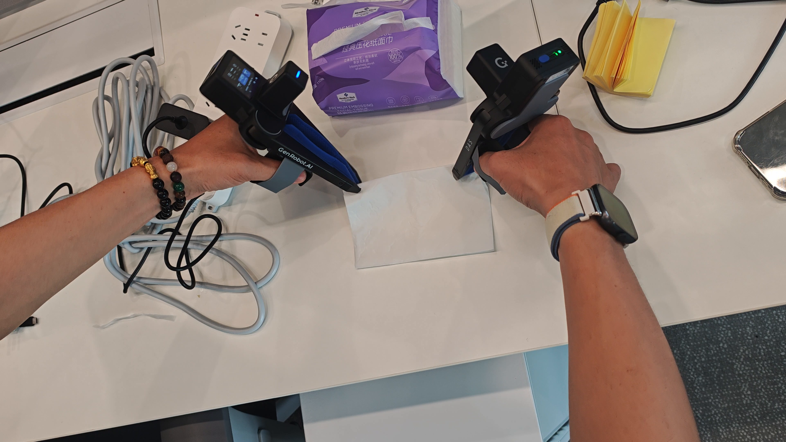

Ego / 观察上下文
用 Ego 记录操作者看到的桌面场景、设备朝向和动作上下文，把“手为什么这样动”保留在可对齐的时间序列里。
- 6-camera RGB
- 头部姿态与 IMU
- 多设备时空对齐
Embodied Capture / Egocentric Sensing / Dexterous Action
从第一视角观测到双手末端动作的具身数据采集
以 GenRobot.AI DAS Ego 建立第一视角与时空上下文，以 UMI 记录双手末端轨迹、夹持变化和接触事件。我已完成设备佩戴、配对与真实桌面双手操作，页面视频即本人实操记录；当前将多模态观测按时间轴整理为可复盘动作单元，进一步接入 VLA 示教、动作切片与策略评估。
Product Facts
Ego 建立观察上下文，UMI 落地手级动作，MCAP 把多模态记录留在同一条可复盘时间线上。下表说明设备能力边界；视频与证据帧，才是我的实操证据。
| 维度 | 官方资料可核对内容 | 对当前研究的意义 |
|---|---|---|
| DAS Ego 视觉 | 6 颗广角 RGB 相机；水平视场约 270°、垂直视场约 150°；录制帧率 30 Hz。 | 覆盖操作者第一视角和桌面周边，为动作前后的场景变化提供同步观测。 |
| 姿态与同步 | 高精度 6 轴 IMU；官方手册将 Ego 定义为第一视角多模态数据采集设备，并支持多设备时空对齐。 | 把头部运动、视线方向和末端动作放到同一时间轴，便于复盘操作意图与执行偏差。 |
| UMI 末端侧 | GenRobot DAS 末端采集产品覆盖视觉、触觉、声学、惯性与磁编码等多模态通道；公开产品页给出双指夹爪与 100 Hz 输出。 | 操作记录不只保留 RGB，还能继续接入接触、夹爪开合和末端状态，形成更完整的示教样本。 |
| 数据落盘 | DAS Ego 手册说明原始采集数据保存为 MCAP，可在电脑端用配套工具进行可视化和后处理。 | 后续可以按时间戳对齐视觉、姿态、音频和操作状态，并把成功与失败片段分开评估。 |
资料依据：GenRobot.AI DAS Ego 产品手册与 DAS / UMI 产品资料。页面只保留归纳后的设备事实，不重复放置外部直链；规格只作为设备背景，不替代我的实机验证。
Visual Evidence
视频来自我的实际操作：可以看到两套 UMI 采集端、Ego 设备屏幕、供电与连接线，以及在桌面上进行双手协同和接触操作的过程。




What I Am Building
用 Ego 记录操作者看到的桌面场景、设备朝向和动作上下文，把“手为什么这样动”保留在可对齐的时间序列里。
用 UMI 末端侧记录双手协同、夹爪开合和接触过程，把视觉中的意图落到可分析的动作与状态字段。
按 MCAP 数据链路保留原始采集文件，后续将不同模态按时间戳切片，区分成功动作、犹豫、接触和失败。
机器狗和 AMR 负责导航到目标附近，Ego + UMI 负责把语言目标落实成观察、动作和反馈，形成跨平台的具身闭环入口。
Honest Status
| 阶段 | 当前公开状态 | 下一步判据 |
|---|---|---|
| 已完成 | 完成 DAS Ego + UMI 设备佩戴、配对、双手桌面操作实录，并将源视频整理为横屏页面素材。 | 继续归档原始采集文件、设备配对状态与可复盘动作片段。 |
| 正在推进 | 围绕第一视角、双手协同和接触操作，建立 Ego 与 UMI 的稳定采集流程。 | 完成多模态时间戳对齐、动作切片、接触状态标注和失败样例回放。 |
| 尚未宣称 | 当前页面没有把单段演示写成 VLA 成功率、策略泛化或长期自主操作结果。 | 用可重复任务、动作误差、接触状态和恢复过程给出真实评估。 |